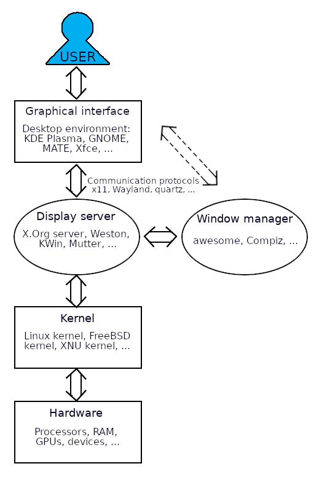

Introduction to Linux¶
- Welcome page and syllabus: https://hpc2n.github.io/intro-linux/index.html
- Also link at the House symbol at the top of the page.
Learning outcomes for this course
- What is Linux and why should I use it?
- Learn about the command line interface (CLI)
- Navigate the file system - ls, mkdir, cd, rm, cp, mv, redirection, pipes, etc.
- Data handling - compressing, archiving, file transfer, patterns, etc.
- Hints and tricks of Linux
What is Linux¶
Note
Most of the commands you learn in this course is agnostic and works on any Linux/Unix like system. MacOS is also a Unix-like OS, and the majority of the commands are the same.
Linux is a family of open-source Unix-like operating systems based on the Linux kernel, an operating system kernel first released on September 17, 1991, by Linus Torvalds.
An operating system is the software that sits underneath all of the other software on a computer, managing the computer’s hardware (CPU, GPU, memory, storage…) and taking care of the connections between your other software and the hardware.
Linux is typically packaged as a Linux distribution, which includes the kernel and supporting system software and libraries, many of which are provided by the GNU Project.
Distributions (distros)
There are many Linux distribuitions, including Ubuntu, Debian, Fedora, Gentoo, and many others. Many distributions are free and open source, but there are also commercial distributions, like Red Hat Enterprise and SUSE.
Desktop Linux distributions include a desktop environment, like GNOME, MATE, KDE Plasma, Xfce, Unity, or many others. A window manager together with applications written using a widget toolkit are generally responsible for most of what the user sees.
In addition, a windowing system of some sort (X11, Wayland) interfaces directly with the underlying operating system and libraries, providing support for graphical hardware, pointing devices, and keyboards. The window manager generally runs on top of this windowing system.

Why Linux¶
- Most HPC centers supercomputers run some flavour of Linux.
- It is stable and reliable
- Customizable
- Runs on any hardware
- Strong community
- Many flavours are open source and free
- Lots of applications
- Lightweight
While the use of Linux on desktop is only 2-3%, the vast majority of web servers (>96%), most mobile devices (Android is based on the Linux kernel), and all supercomputers on the Top500 list run Linux.
More information¶
There is much more information about Linux on Wikipedia.
Some pages with guides and/or cheat sheets: